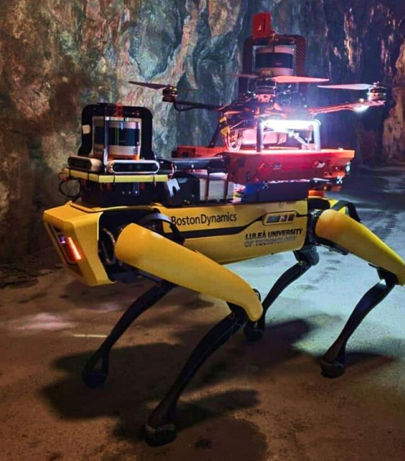
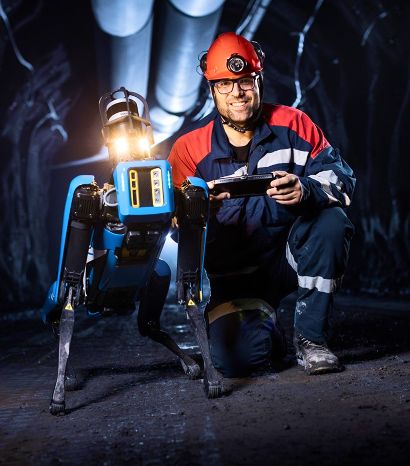
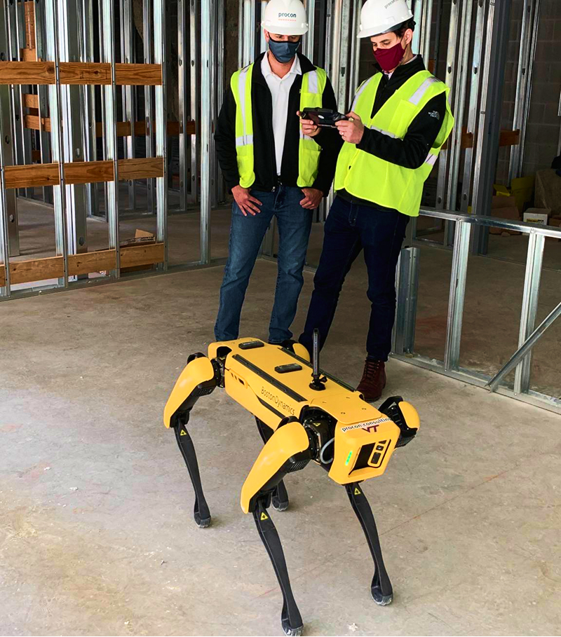

Solutins
SOLUTIONS
Real-world robotics solutions
Everyday challenges. Everyday robotics.
Our robots make workplaces safer and operations more efficient.
INSPECTION
Reliable data, reliable operations
-
- Thermal Sensing
- Equip Spot with an optional thermal camera to detect issue-indicating hot spots in tanks, machinery, or electrical conductors.
-
- Visual Inspection
- Collect color visuals, read gauges, and perform detailed inspections with Spot’s pan-tilt-zoom (PTZ) camera.
-
- Acoustic Imaging
- Acoustic imagers allow Spot to listen for and visualize otherwise undetectable air leaks and vibrations, helping prevent expensive equipment failure.
-
- Perimeter Checks
- Spot helps automate routine security and health & safety checks in your facilities. Detect hazards, compliance issues, and other risks on site.
Safety & Response
First on Site. First to Respond.
-
- Remote Investigation
- Gain situational awareness from a safe distance
-
- Nuclear Decommissioning
- Minimize worker dose and support decommissioning efforts
-
- CBRNE
- Investigate chemical, biological, or radiological threats
-
- EOD
- Locate, identify, and render safe explosive devices
Digital Twin
Centralized Facility & Asset Performance Datas
-
- Laser Scanning
- Autonomously perform routine, repeatable reality captures to support factory design, equipment installation, and change management.
-
- Site Documentation
- Collect visual data of construction sites to monitor progress, detect issues, and keep projects on track.
-
- Industrial Inspection
- Spot inspects your critical assets for early indicators of failure and checks your site for safety hazards, alerting you when something is wrong.
Warehouse Automation
Reliable Case Handling Automation
-
- Trailer Unload
- Speed inbound operations with automated unloading
-
- Case Pick
- Build orders with power and precision
-
- Facility Inspection
- Detect EHS, security, and equipment issues early
Research & Development
Changing how we put robots to work
We solved the tough robotics challenges out of the box so you can focus on solving the tough challenges in your industry.



Spot for R&D
-
- Mobility
- Spot can go places other robots for research applications can't—without requiring you to spend research time developing or maintaining custom navigation and locomotion systems.
-
- Locomotion
- The Reinforcement Learning Research Kit provides joint-level API access and a ready-to-use simulation environment for developers, in collaboration with NVIDIA.
-
- Autonomy
- Developers have access to the broader autonomous navigation API to create sophisticated autonomy solutions.
-
- Manipulation
- The Spot Arm allows the robot to more directly interact with the world around it, opening up new practical functions.
-
- Integration
- Customize Spot to solve your operation's obstacles with payloads and software integrations for sensing, communications, controls, and more.